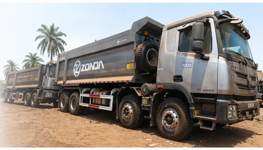
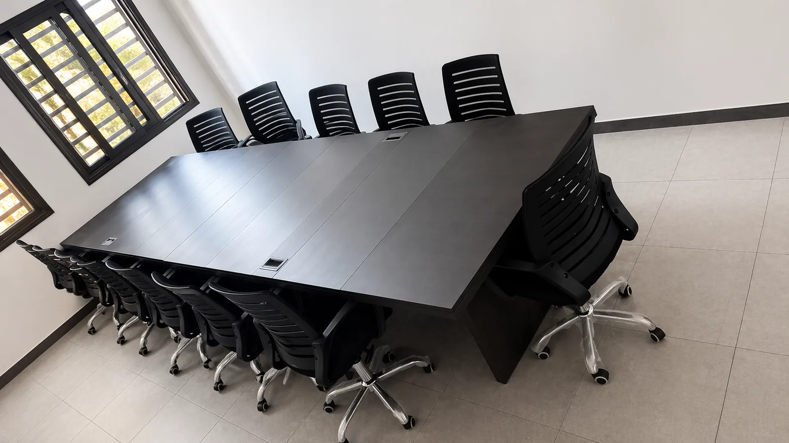
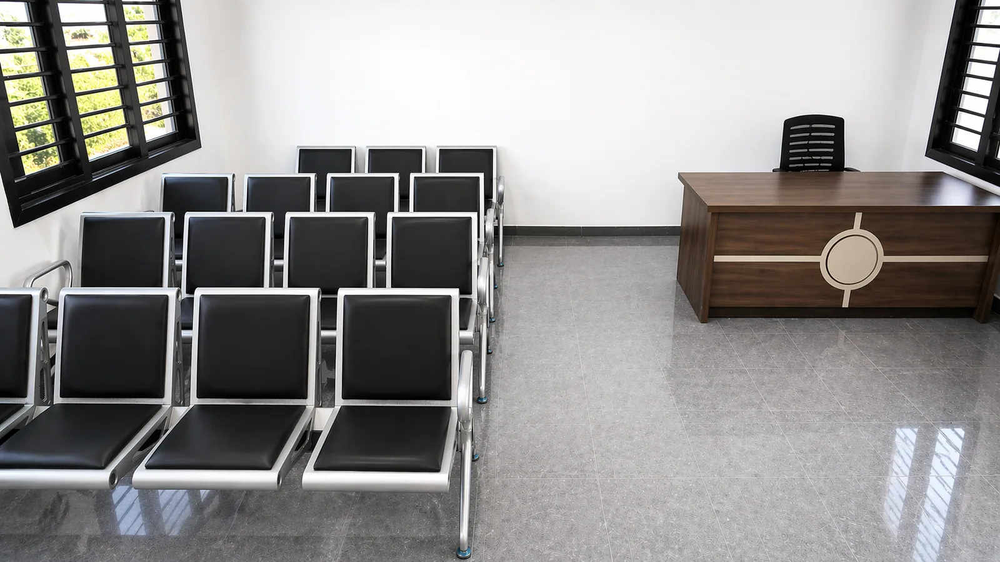
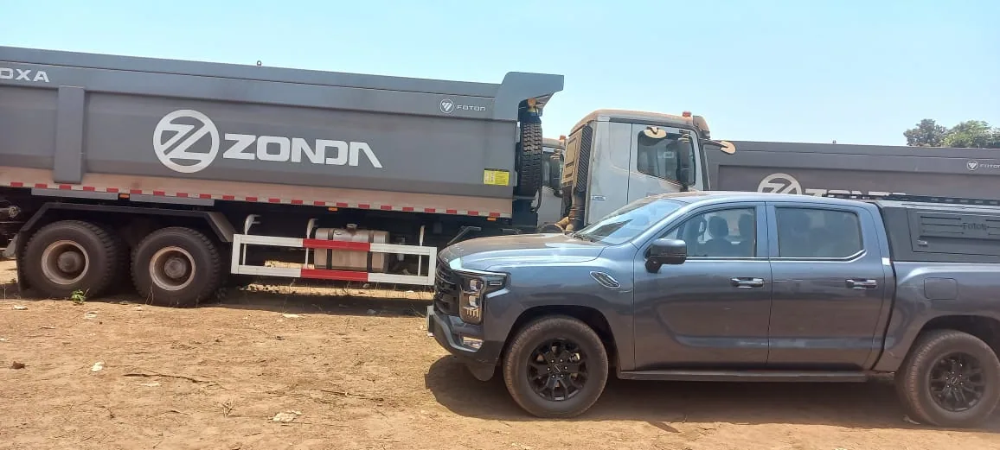
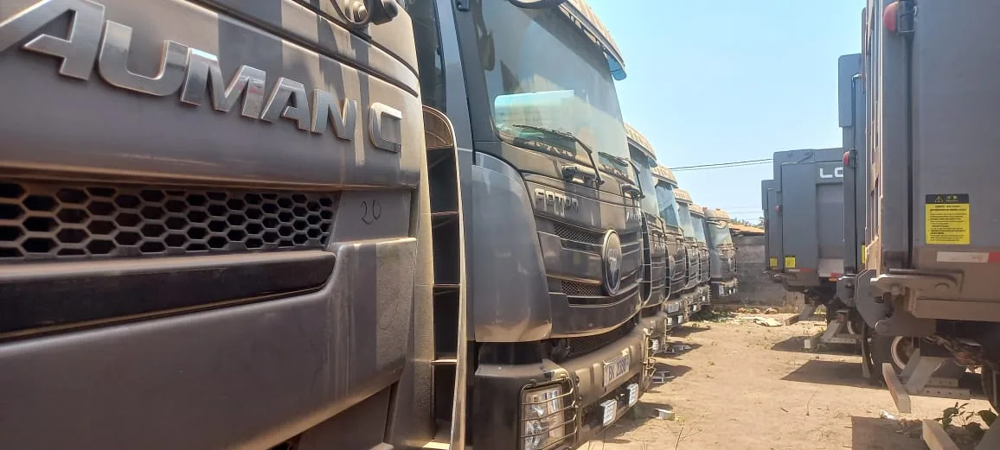

Transport général & minier · Guinée
Transport minier en Guinée.
Transport minier en Guinée.
Livraison assurée.
Transport de bauxite, de marchandises et logistique de projets : nos équipes à Conakry et Kolaboui accompagnent vos opérations en toute sécurité.
Transport minier
Bauxite
Marchandises
Logistique de projets
Qui sommes-nous ?
Fastlane Logistic — Votre partenaire transport & logistique en Guinée.
Fastlane Logistic est une entreprise guinéenne spécialisée dans le transport sous toutes ses formes. Nous opérons aussi bien dans le transport général de marchandises que dans le transport minier, avec une expertise reconnue sur les opérations de bauxite et de matières premières.
Nous accompagnons nos partenaires sur des projets de grande envergure, s’étendant sur plusieurs centaines de kilomètres de corridors miniers et logistiques. Ces missions exigent patience, rigueur et engagement de long terme — autant de qualités qui caractérisent nos équipes depuis le premier jour.
Basés à Conakry, avec un bureau opérationnel déployé à Kolaboui, dans la préfecture de Boké, nous mettons à disposition une flotte moderne, des chauffeurs qualifiés et une organisation rodée pour garantir à nos clients sécurité, ponctualité et traçabilité sur l’ensemble de leurs flux.
À Kolaboui, dans la préfecture de Boké, nous exécutons notamment des prestations contractuelles pour ADS MINING-SA KOLABOUI. Nous intervenons également dans la préfecture de Siguiri pour SCEM LERO, dans le respect des exigences opérationnelles, sécuritaires et environnementales propres aux activités minières.
Découvrir Fastlane Logistic →


Une logistique pensée pour les exigences du terrain.
Trois piliers qui font la différence sur les corridors miniers de Guinée : une flotte spécialisée, une supervision opérationnelle et une capacité de mobilisation à la hauteur des projets.
Flotte
01
Une flotte spécialisée bauxite
Camions bennes ZONDA et Foton configurés pour les pistes minières : tonnage élevé, robustesse, entretien préventif programmé. Chaque véhicule est suivi, identifié et affecté en fonction des exigences du contrat.

Supervision02
Une supervision présente sur site
Notre équipe se déplace au plus près des opérations : briefings sécurité, contrôle des chargements, gestion des incidents et coordination des chauffeurs sur l’axe Boké – Kamsar – Conakry. Une présence terrain réelle, pas seulement un suivi à distance.

Capacité03
Une capacité de mobilisation rapide
Plusieurs unités Auman et Foton prêtes à être engagées simultanément pour absorber les pics de production. Disponibilité 24/7, planification des rotations et redéploiement rapide en cas de besoin opérationnel.
Activité des rotations
● Suivi actif
L’application FASTLANE
Un centre de commande pour vos opérations.
Flotte, bons, carburant, maintenance, RH, facturation et bilans réunis dans un seul espace clair.
Opérations minières
Bons de transport, contrats, tonnage et rotations sur les axes miniers.
Gestion de flotte
Camions, capacités, statuts, maintenance préventive et disponibilité.
Carburant & dépenses
Consommation, pannes et frais administratifs par période.
Facturation
Contrats, factures et situation commerciale centralisée.
Ressources humaines
Employés, chauffeurs, présences et affectations opérationnelles.
Bilans & rapports
Indicateurs, exports et synthèses mensuelles pour la direction.
Une exécution claire et mesurable.
Sécurité d’abord
Chauffeurs formés, contrôles réguliers, exigences HSE respectées.
Ponctualité
Rotations planifiées et réactivité sur les corridors prioritaires.
Transparence
Bons numérisés, tonnage suivi, rapports clairs par période.
Contact
Prêt à professionnaliser votre suivi logistique ?
Échangeons sur vos volumes, vos corridors et vos exigences opérationnelles.
AdresseConakry, Kipé Centre Émetteur
E-mailcontact@fastlanelogisticgn.com
Téléphone+224 614 73 77 77 / +224 614 74 77 77